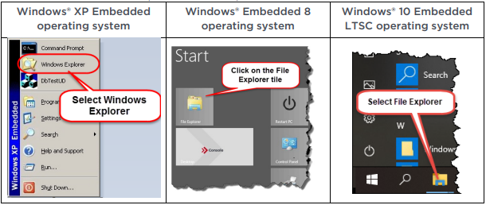
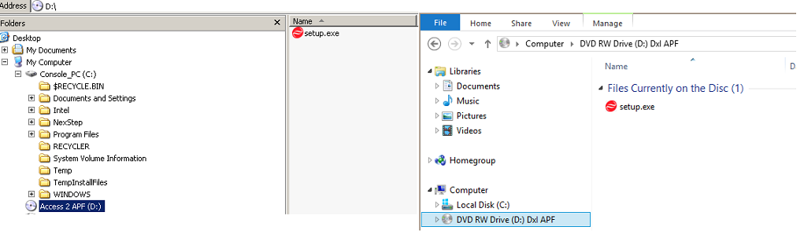

Software Download APF Installation Instructions
This procedure describes how to download and install the APF or APF/AAF files.
Perform this procedure when:
- Installing or updating the APF or APF/AAF.
- APF or APF/AAF CDs or files are not available.
Required tools:
- Computer or laptop with Windows 7 or higher
- USB Flash Drive
- DVD/CD-RW Drive
- Blank CD-R (writable CD)
Note: See DxI Parts List or Access Parts List for tools part numbers.
PERFORM AN IMMEDIATE BACKUP
You may need the backup database to restore the system if a catastrophic event occurs during installation.
- In the Main Menu, select Configure > PC Amin.
- Verify the backup USB drive is installed in the PC, and select Immediate Backup.
- Enter the password Access2Support (case sensitive) and then select OK.
- When the warning dialog is displayed, select OK.
- If there are no errors (hardware or software), the backup starts and displays a Backup Status dialog box. If there are errors, resolve the errors and retry the backup.
If you are unable to complete the system backup procedure, contact Technical Support before proceeding.
| For the following action... | Refer to... |
Download APF or APF/AAF files from
beckmancoulter.com and Install with a USB Flash Drive For Access Family of Immunoassay Systems
|
Step 1 |
Download APF or APF/AAF files from
beckmancoulter.com and Install with a CD For Access Family of Immunoassay Systems
|
Step 2 |
Download APF or APF/AAF files from
Access Applications Service Manual and Install with USB Flash Drive For Access Family of Immunoassay Systems
|
Step 3 |
Download APF, APF/AAF, or AAF files from
Access Applications Service Manual and Install with a CD Access Family of Immunoassay Systems including DxC600i (Access 2i)
|
Step 4 |
-
Download APF or APF/AAF files from
beckmancoulter.com and Install with a CD for Access Family of Immunoassay System.
Warning: DO NOT use this step to install or update APF/AAF files on the UniCel DxC 600i (Access 2i) system.
-
Transfer the APF or APF/AAF CD files to an Access 2 or Unicel DxI System.
- Insert the APF or APF/AAF CD into the Access 2 or Unicel DxI system DVD/CD drive.
- Press the Windows key on the keyboard, or press [Ctrl]+[Esc] and open the Windows Explorer or File Explorer.
- Navigate to the DVD/CD drive.

- Click on the drive name to open it. Double-click on the file
setup.exe.

- Select
Setup to transfer the APF files to your system PC.

- From the following window, press
[Enter] to return to the Explorer window.

- Close the Explorer window by selecting the X in the upper right corner.
- Remove the APF CD from the DVD/ CD drive. The APF files have been transferred to the Access 2 or Unicel DxI system external PC.
-
Transfer the APF or APF/AAF CD files to an Access 2 or Unicel DxI System.